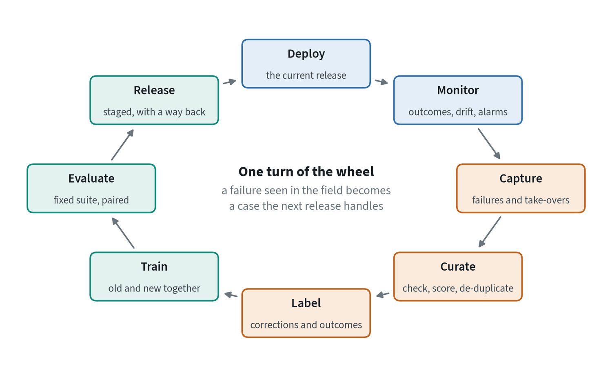
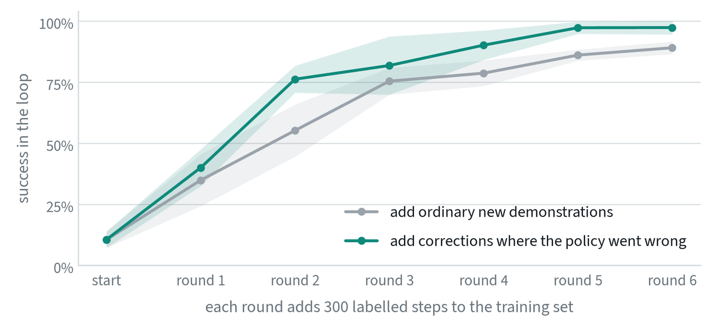
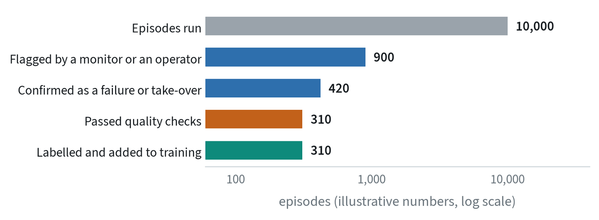
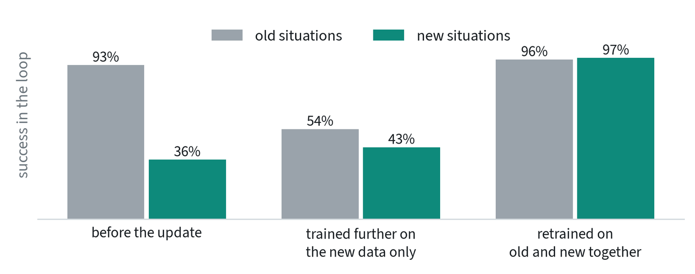

What a data flywheel is
A policy trained on demonstrations is only as good as the situations those demonstrations covered. Once it is deployed, it meets the rest. A data flywheel is the loop that turns those encounters into training data: every failure in the field becomes a case the next release handles.


The name comes from the way the loop feeds itself. A better policy can be trusted with more work, more work produces more data, and more data makes a better policy. The loop is simple to draw and hard to run, because each stage has a way of quietly failing. This note goes through them in order.
What to capture
A fleet produces far more data than anyone can store, review or train on, and most of it shows the policy doing what it already does well. The first design decision is what to keep.
| Keep | Why it is valuable | How it is detected |
|---|---|---|
| Take-overs | A person stepping in marks the exact moment the policy was wrong, and what they do next is a demonstration of the fix | The operator’s control input |
| Failures | Shows what the policy cannot do | Success checks, timeouts, safety stops, operator reports |
| Near misses | Recovered slips and retries are failures that almost happened | Repeated grasps, long episodes, force spikes |
| Unfamiliar situations | Places the training data did not reach | Distance from training data, low confidence, disagreement between predicted chunks |
| A random sample of everything | An unbiased picture of normal operation, for monitoring and for evaluation | Chosen by chance, not by a trigger |
The last row is easy to skip and important. Data chosen by triggers is biased toward what the triggers can see. A small random sample is the only way to notice the failures no monitor was built for.
Why corrections are worth more than new demonstrations


The two strategies cost the same in expert effort. After two rounds the flywheel is at 76% and ordinary collection at 55%. After five it is at 97% against 86%.
The reason is where the data comes from. Expert demonstrations show the states an expert visits, and an expert rarely gets into trouble. The policy’s mistakes take it to states the expert never saw, and those are the states it needs help with. Collecting corrections there puts the data exactly where the policy’s errors are. This is the idea behind a family of methods that began with DAgger, and it is why take-overs are the most valuable thing a fleet produces.
The experiment also shows the flywheel’s built-in limit. As the policy improved, its failure rate during collection fell from 86% in the first round to 2% in the last. Each turn of the wheel leaves fewer failures to learn from, so the same amount of useful data takes more and more robot hours to find. A flywheel does not spin faster for ever. It needs a growing fleet, or harder tasks, to keep its supply.
From captured episodes to a training set


- Confirm. Monitors raise false alarms. A person, or a second model, checks that a flagged episode is what the flag says.
- Curate. The same checks as any dataset: synchronised sensors, no dropped frames, sensible duration. The note on robot data lists them.
- Cut. Keep the stretch around the event, not the whole shift. For a take-over, that is a few seconds before it and the correction after.
- Label. A take-over arrives with its own labels: the person’s actions. An autonomous failure has none, and needs either a person to demonstrate the right behaviour from that state or a method that can learn from an outcome alone.
- File it. Tag every episode with the release that produced it, the task, and the failure type. Without the release, nobody can later tell whether a problem was fixed.
Training on it without breaking what worked


The obvious way to use new data is to continue training on it. The figure shows what that does. Success on the old situations fell from 93% to 54%, and the new situations barely improved. A network trained only on new data moves its weights to fit that data and loses what the old data was holding in place. This is called catastrophic forgetting.
- Train on old and new together. Either retrain from the pretrained starting point on the whole set, or keep mixing a share of old data into every batch.
- Weight the new data up, within reason. Fresh corrections are few, so they are sampled more often than their numbers warrant. Too much, and the policy overfits to last week’s failures.
- Keep every earlier fix in the test suite. A failure that was fixed once should stay fixed. The next section covers this.
Learning from episodes with no correction
Most of what a fleet does is unattended, so most episodes have no human correction attached. Two things can still be done with them.
- Successes as demonstrations. A successful autonomous episode is a free demonstration. Used alone, this drifts toward the easy cases the policy already handles, so it is a supplement to corrections, not a replacement.
- Outcomes as reward. If each episode is labelled only as succeeded or failed, reinforcement learning can use both kinds, learning which actions led toward success. This is how practice on the robot is turned into improvement, and it is covered in the reinforcement learning note.
Both depend on the success label being right. An automatic success detector that is wrong one time in ten teaches the policy that one failure in ten is the goal.
Keeping the loop honest
A flywheel feeds a model’s own behaviour back into its training. That makes it easy to fool yourself, in four ways.
| Risk | What happens | Guard |
|---|---|---|
| The test set leaks | Field failures are added to training, and the same failures are used to measure improvement | A held-out evaluation set that is never trained on, refreshed when it has been looked at too often |
| Old fixes come undone | A new release repairs this month’s failure and reintroduces last month’s | A regression suite: every fixed failure becomes a permanent test |
| The policy shapes its own data | It stops attempting what it is bad at, so those cases vanish from the data and look solved | The random sample; and track what is attempted, not only what succeeds |
| The conditions changed, not the policy | Success rises because the week’s work was easier | Compare releases side by side on the same conditions, with intervals |
The evaluation note covers how to compare two releases properly, and failure triage covers how to tell what a given failure was caused by before deciding that more data is the answer.
Measuring the flywheel itself
- Loop time. The time from a failure being seen in the field to a release that handles it reaching the fleet. This is the flywheel’s speed, and usually the number most worth improving.
- Yield. The share of captured episodes that end up in training. A low yield means the triggers are noisy or the curation is too slow.
- Interventions per hour, by release. The outcome the whole loop exists to move.
- Failures by type, by release. Whether each turn removed the failure it targeted.
- Cost per point. What a point of improvement cost in robot hours, review time and compute, compared with other ways to spend the same money.
Teams tend to measure the size of the dataset. The numbers above measure whether the wheel is turning.
Common mistakes
- Storing everything and reviewing nothing. Data that is never curated or labelled does not improve anything.
- Fine-tuning on the newest data alone. It forgets. Train on old and new together.
- Measuring on the failures you trained on. Keep a held-out set and a regression suite.
- Expecting the wheel to speed up by itself. A better policy fails less, so each turn takes more deployment to supply.
Terms
- Data flywheel
- The loop in which a deployed model’s failures are captured and used to train its successor.
- Take-over
- A person assuming control from the policy; also called an intervention.
- Catastrophic forgetting
- Losing earlier abilities when a network is trained further on new data alone.
- Regression suite
- A fixed set of tests for failures that were fixed before, run on every release.
- Loop time
- The time from seeing a failure in the field to deploying a release that handles it.
- Yield
- The share of captured episodes that end up in the training set.
Further reading
- Ross et al., 2010. A Reduction of Imitation Learning and Structured Prediction to No-Regret Online Learning (DAgger).
- Kelly et al., 2018. HG-DAgger: Interactive Imitation Learning with Human Experts.
- Liu et al., 2022. Robot Learning on the Job: Human-in-the-Loop Autonomy and Learning During Deployment.
- Bousmalis et al., 2023. RoboCat: A Self-Improving Generalist Agent for Robotic Manipulation.
- Physical Intelligence, 2025. π*0.6: a VLA That Learns From Experience.